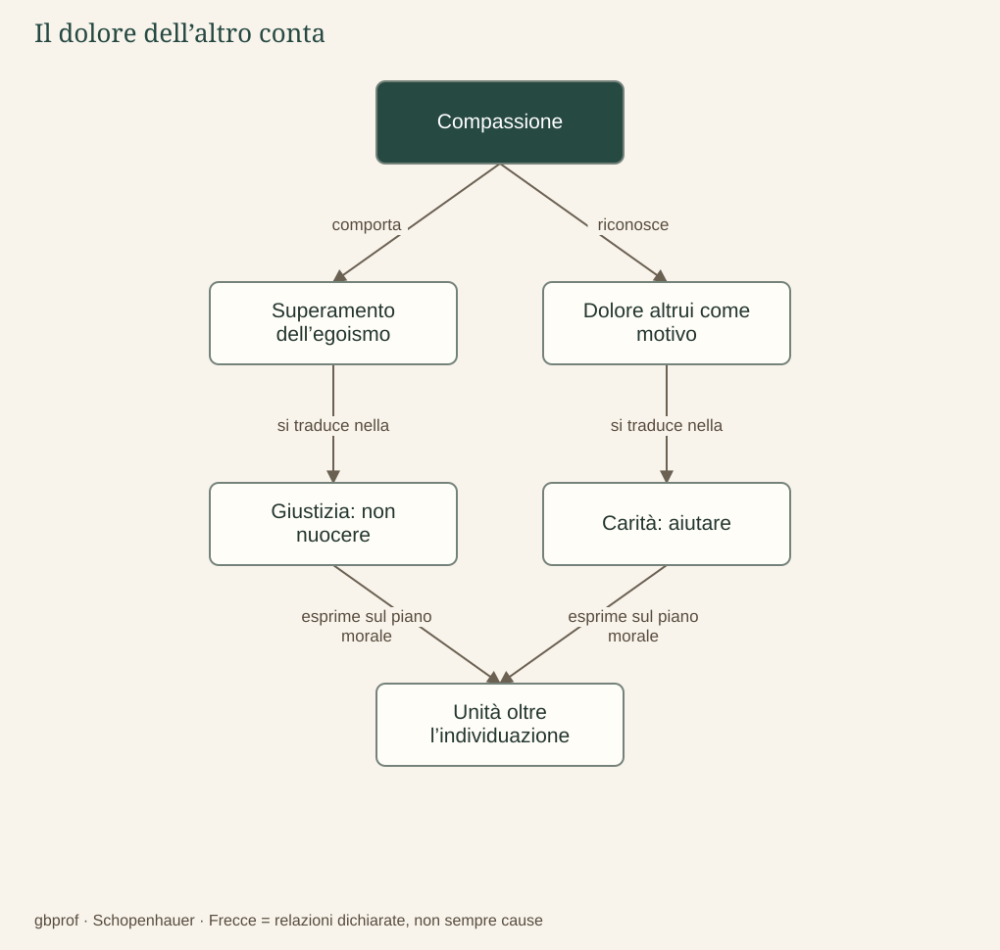

A · Comprendere Schopenhauer · 09
Compassione ed etica
Perché il dolore dell’altro dovrebbe riguardarmi?
Se considero soltanto il mio interesse, il dolore altrui può apparirmi rilevante solo quando minaccia anche me oppure ostacola un mio obiettivo. Posso aiutare qualcuno per essere ricambiato o per ottenere ammirazione; in tal caso l’azione può avere effetti positivi, ma il suo motivo rimane centrato sul soggetto che agisce. Schopenhauer cerca invece di comprendere come sia possibile un comportamento nel quale il bene dell’altro conti per se stesso.
Il dolore altrui come motivo immediato
La compassione è l’esperienza nella quale la sofferenza di un altro entra direttamente tra i motivi del nostro agire. Non significa provare dall’alto una benevolenza umiliante, né immaginare che l’altro sia soltanto una copia di noi. Significa riconoscere che il suo patire ha un valore che non dipende dal vantaggio che possiamo ottenere aiutandolo. La distanza fra «mio» e «altrui» non viene cancellata materialmente, ma perde il carattere assoluto che possiede nell’egoismo.
Schopenhauer distingue due direzioni di questa motivazione. La giustizia trattiene dal produrre sofferenza e dal violare l’altro; la carità, intesa come amore disinteressato, conduce a intervenire positivamente per alleviarne i mali. L’una limita il danno che potremmo causare, l’altra risponde al dolore già presente. La distinzione permette di capire perché l’etica non si riduca a un sentimento: essa si manifesta nelle azioni e nelle rinunce concrete.
Il significato metafisico del riconoscimento
Nel quadro del sistema, la compassione corrisponde al superamento della prospettiva che considera gli individui come esseri assolutamente separati. Chi riconosce nell’altro la propria stessa essenza penetra, per così dire, il velo dell’individuazione. Questa unità non richiede che due persone abbiano identici ricordi, interessi o caratteri; riguarda il fondamento del loro essere, non la somiglianza psicologica.
Non occorre, per Schopenhauer, recitare una dimostrazione metafisica prima di aiutare chi soffre. La compassione si manifesta prima di una formulazione teorica, mentre la filosofia cerca di comprenderne il significato. Il suo ambito comprende anche gli animali: se il criterio morale è la sofferenza, l’appartenenza alla specie umana non costituisce l’unico confine di ciò che merita considerazione.
Un esempio chiarisce la differenza dei motivi: soccorrere un compagno per ottenere il suo voto in una competizione scolastica e soccorrerlo perché la sua difficoltà ci riguarda possono produrre il medesimo gesto esterno, ma non hanno la stessa qualità morale. Nella realtà le motivazioni spesso si mescolano; la distinzione serve a interrogare il nostro agire, non a dichiararci puri o a leggere con certezza la mente degli altri. La compassione riduce l’egoismo, ma non coincide ancora con la rinuncia radicale al volere che incontreremo nell’ascesi.
Dopo la lettura
Mappa di sintesi


Leggi la mappa in forma testuale
- Compassione comporta Superamento dell’egoismo.
- Compassione riconosce Dolore altrui come motivo.
- Superamento dell’egoismo si traduce nella Giustizia: non nuocere.
- Dolore altrui come motivo si traduce nella Carità: aiutare.
- Giustizia: non nuocere esprime sul piano morale Unità oltre l’individuazione.
- Carità: aiutare esprime sul piano morale Unità oltre l’individuazione.
Fermati sul problema
Due persone aiutano lo stesso compagno: una per essere premiata, l’altra per il suo dolore. Che cosa cambia?
Confronta il tuo ragionamento
Il motivo: nel secondo caso il bene altrui conta per se stesso. La compassione riguarda la motivazione non egoistica; può esistere prima della sua spiegazione filosofica.